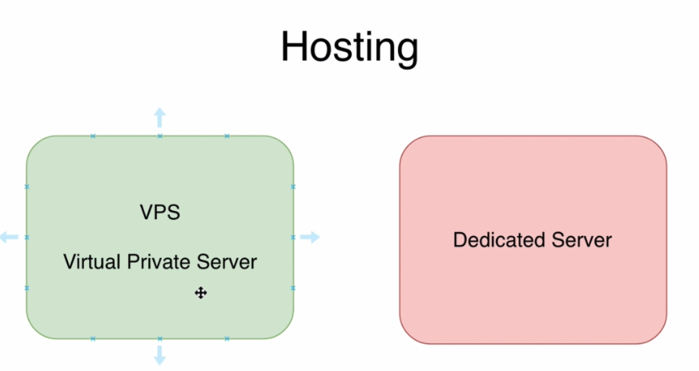
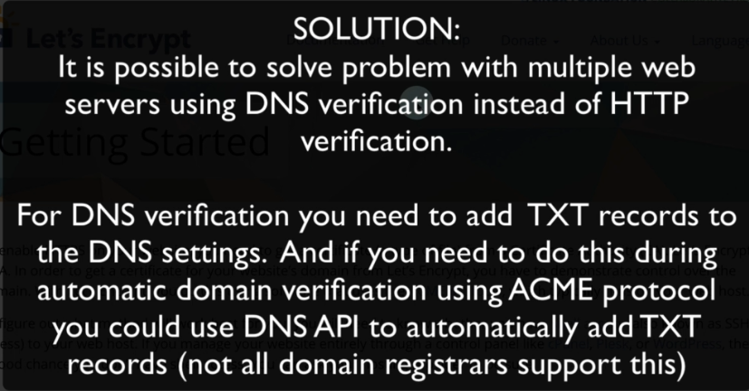

in VPS
Oversubscription-->sums of the resources (vCPUs, RAM, disk space) allocated to all VPSs on a single physical server are larger than real amount of resources on the physical server
EX:
24 VPSs on a single physical server with 2 vCPU, 4GB RAM each. Total 48 vCPUs and 96GB RAM. But physical server has only 32 CPUs and 80 GB RAM
-->Internet Providers also almost always use oversubscription and sum of the bandwidth allocated for the customer is much higher than total bandwidth internet provider could handle.
-->that's why VPS are usually less expensive than dedicated servers with same parameters

-->Dedicated Server: can be physical server or VPS(will not oversubscriped, has guaranteed resources)
-->During some peak times VPS server may get less resources than it was allocated. But usually it's not noticable.
----------------------------------------------------------
Hosting Services
1-Amazon
2-Google Cloud
3-Microsoft Azure
4-DigitalOcean
-->you can get a fully scaled production solution in each of those, there are suitable for small companies, medium or even large enterprises
Spot instances-->it's not a good choice to host website that should be available all the time
----------------------------------------------------------
How to link domain name with other server?
1-Change name servers to name servers of DigitalOcean
2-Add "A" records to the DNS configuration
Recommendation-->Redirect HTTP to HTTPS if HTTPS is enabled and you have valid TLS Certificate
----------------------------------------------------------
-->Free TLS Certificates from Let's Encrypt are valid for 90 days
-----------------------------------------------------------
-->Designed to automate entire process of obtain and renewing free TLS certificates
-->with let's encrypt you will get certificate with domain validation


How to solve this problem?
-->stop other webservers except one and after that obtain certificate and distributed it to other web servers


----------------------------------------------------------
-->Free Certificate-->valid for 90 dyas and they should be updated, usually it happens automatically each two month that means that during the year you will get six new certificates
CloudFlare-->is one of largest cloud network platforms and it allows to serve content for your website much faster and also it gives your ability to use free TLS encryption